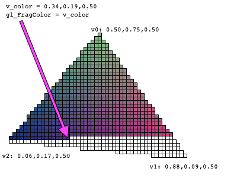
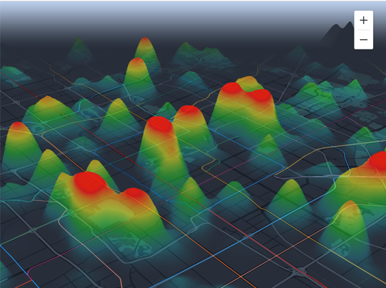

2018年是初入职场的一年，适应工作节奏，积累基础知识。2019年是技术成长的元年，是野蛮生长的一年。行走江湖总需要一门手艺，今年主要在WebGL渲染技术上进行纵向深耕，走进了数据可视化的大门，同时在地理信息专业领域上有了更具体的理解。3D渲染和GIS都是非常“小众”的领域，所以也利用业余时间和技术分享机会关注着Web前端的行业动向和前沿技术，希望在2020年有更多的尝试。
纵向深耕
WebGL从入门到实战
今年团队需要打造全新的3D地图渲染引擎和数据可视化API，cycas带着我一起来攻克这个难题。虽然在2018年初探索Web AR时使用过Three.js，但那只是对上层封装的一点应用，而现在需要深入到原生接口层面，了解其背后的渲染原理，实现自研引擎。
WebGL的入门
WebGL的入门并不容易，光是基础概念篇就足够劝退大多数人了。虽然概念很多，接口很复杂，而且还涉及到各种矩阵运算，但只要理解其核心原理，做一些简单的封装工作，使用起来就会轻松很多。在这个阶段主要是依靠书本网站和demo练习来理解WebGL的工作原理和使用方法。推荐如下：
- WebGL 理论基础
- 《WebGL编程指南》
首先需要明白的是WebGL其实只是光栅化引擎，与Canvas2D API这样的绘图引擎不同的是，它并不能直接理解你要在某位置用某样式绘制某形状这样的命令，它只关心像素的坐标和颜色。由此引出顶点着色器和片元着色器，顶点着色器计算顶点坐标，经过光栅化得到其覆盖的像素片元，片元着色器决定每个片元的颜色值。为了光栅化，WebGL只提供点、线、三角形的绘制，所以复杂形状都需要进行三角剖分。

其次要理解的是WebGL本身并不具备3D能力，所谓的3D实际上是一个矩阵，模型视图投影矩阵。接触过Three.js的很容易被其误导，会让人以为WebGL能够理解三维物体和视角变换，因为它的核心概念Scene和Camera是一种更接近于常人理解的3D空间的封装，而实际上它只是帮你完成了矩阵的计算而已。一个矩阵代表的是一种特定的坐标转换，是拉伸、旋转、平移等基础转换的组合，模型视图投影矩阵实际上是三个矩阵的连乘，模型矩阵定义了在模型局部坐标系内的坐标转换，视图矩阵定义了模型在世界坐标系中的坐标转换方法，投影矩阵一般指透视投影，通过它的变换形成了最终近大远小的效果。矩阵的计算都是在JS中完成的，然后传入到顶点着色器中完成对坐标的转换。
模型视图投影矩阵 = 投影矩阵 x 视图矩阵 x 模型矩阵
这个阶段我进行了基础图形绘制的练习，也沉淀了一篇文章，但之后觉得所用方法过于低级便没再更新了，见WebGL绘制基本图形–线。
WebGL的进阶
WebGL中的混合、深度测试、模板测试虽然都是非常基础的概念，都是基于缓冲区实现对片元的处理过程，但只有在实际应用中才能真正理解并合理使用它们。比如在可视化引擎中透明模型叠加时既需要根据深度剔除后侧模型，又需要混合可视化模型与底层地图的颜色，就可以先开启深度测试写入深度，然后开启颜色进行混合。再比如在地图的雾化处理中，需要使用深度纹理将深度信息传入着色器，然后根据深度计算雾化的混合参数，将片元颜色与雾色进行混合，形成雾化效果。
缓冲区其实就是用于数据暂存，纹理也是一种数据存储介质，除了用于给模型贴图外还有很多用处。一是文字的绘制，二是结合帧缓冲用于预处理或者后处理。在我们的实际应用中，预处理主要用于热力图的数据聚合以及图形的拾取，后处理则用于雾化处理和抗锯齿，均是在着色器以片元为单位进行数据读取。
在性能优化方面也形成了一些经验积累，最主要使用的技术就是实例化渲染。实例化的核心思想就是将具有相似要素的图形抽象出一个公共模型，在着色器中以公共模型为基础结合实例数据渲染出实例图形。基于实例化技术，除了可以高效渲染点模型、立方体模型之外，我们也可以实现线的实例化渲染，将线段作为实例，利用光栅化的插值原理处理好端头衔接处。实例化一方面简化了代码，另一方面提高了绘制效率，是非常实用的技术。
这一阶段结合一些项目中的实际问题我也进行了经验沉淀和技术方案的梳理，主要有WebGL-Y轴翻转踩坑实录、WebGL-3D地图大俯仰角的雾化处理。
数据可视化
数据可视化相对于地图渲染引擎来说更偏应用层，更轻量也具有通用性，也更加重视渲染效果。常见的地理位置数据可视化按数据和表现形式主要分为点、线、面三种类型，使用频率最高的是散点图和热力图。
除了上文提到的渲染技术，可视化还涉及到数据的预处理，比如热力图的数据聚合处理。热力的聚合一般有两种，一种是多源辐射叠加，在表现上更为连续，需要结合帧缓冲技术进行预渲染再着色；一种是网格聚合，表现上离散化，预先按特定的单元格对数据进行分割，主要是在CPU中的计算工作。

另外，可视化中动画效果也是非常重要的。最常用的是移动动画，比如轨迹图和迁徙图的拖尾移动，主要是通过在顶点上增加时间数据，经过光栅化插值处理后每个片元都会有相应的时间值，根据时间值计算其显示颜色。另外还可能涉及到一些高级动效，比如火焰等，需要利用噪声技术生成。
热力图的渲染技术不仅沉淀了文章，见Web数据可视化-手把手教你实现热力图，还申请了相关的技术专利。可视化的相关技术还有不少值得探索的地方，也是2020年的重点方向。
技术影响力
不断的总结沉淀与经验分享不仅能够帮助自己巩固所学的知识，也能在与他人的交流中受到更多的启发来修正和完善自己的认知。
今年的知识沉淀主要来源于工作项目，一部分是包括上文所提及的几篇技术方案类文章，主要着眼于Web渲染技术，发表于公司内部KM平台、掘金以及自己的博客，得到了一些同行的认可；另一部分是规范沉淀，包括代码规范、命名规范、注视规范，原本只是我对自己制定的规范要求，应用到我负责的项目中，后来得到了组内认可并在大家共同的讨论下愈发完善，并逐步应用到组内其他产品中。
另外今年在探索全新领域的过程中产出了不少创新的技术方案，我也开始将其转化为专利，希望能在2020年形成正向反馈循环，促使自己不断创新创造，深入钻研。
今年只在组内进行了一次技术分享，不过在形式上进行了大胆创新，通过实践的模式让大家充分参与并实实在在地掌握了一个新技术。不过在2020年，我需要督促自己储备更多的技术知识，进行更多的技术分享，不仅在组内，更要争取在更大的平台上，不仅局限于项目内的技术方案，更要多了解前沿热点技术。
通用能力
API设计
今年从零开始打造了两个API产品，API产品的设计其实更多是由研发主导的，因为用户本身也是开发者，所以研发从用户使用和技术实现上都更有话语权。在反复的迭代更新和各方的思维碰撞中，我了解到API设计并不只是给参数、方法取名而已，是一门值得深入研究的学问，API设计就像是面向开发者的UI设计，优雅的API能够让使用者高效而直观地完成功能。Web端的API设计相较于native端来说更需要斟酌和打磨，如何设计优秀的API是我们钻研了一年的课题。
首先我们确定了API的设计目标，主要着眼于可读性、一致性、平衡性、流畅性。然后我们制定了一些规范，以保证在长期的设计中不会偏离初衷：
参数命名风格：API设计之初应该确定一套参数命名规范，以保证一致性和可读性。其中包括名次、动词、布尔值等不同词性的参数命名风格，常用方法名次及意义的统一。除此之外，还需要考虑行业专有名词的命名规范，比如地图的缩放等级zoom、俯仰角度pitch等，这些应该与行业保持一致以便于用户理解。我们也总结了一套命名规范，在组内各产品间统一要求：JavaScript 命名规范。
命令与查询：API中最常见的应该是命令查询接口，比如参数的访问和设置。命令查询接口应该保持分离，各司其职，还是高度抽象，集中为单一接口？两者各有千秋，我们最终选择了命令查询分离的风格，使接口功能尽量单一和清晰，便于用户理解和使用。
函数参数：为了避免冗长的函数签名，使用参数映射实现参数传入，这样的设计更具有描述行和可扩展性。
方法连续性：支持链式调用，使方法的使用更流畅易读。
另外，接口的可扩展性仍是最具挑战的课题，在设计之初就能够预见未来。一是需要就有全局观，不只是着眼于当前，而是能够把握产品未来的功能扩展，进行统筹规划；二是能够举一反三，为了避免以后不断新增相似而冗杂的接口，需要能够在具象中抽象。
代码质量
今年我们尝试在新项目中接入自动化的代码质量监控工具，涉及到了代码规范、质量扫描、自动化测试等。
除了沉淀了一套代码规范并在组内通用之外，今年我们与测试同学一起制定了比较完善的测试流程，搭建了整套的测试架构，大大提升了代码质量和测试效率。该测试方案对于其他web项目具有借鉴意义。
单元测试：使用mocha实现单元测试，开发者在本地开发过程中可以通过单元测试保证基础功能单元的稳定性
代码质量扫描：接入sonarqube平台实现代码质量管理，不仅可以扫描代码漏洞，还可以报告代码异味、重复率、圈复杂度以及单元测试覆盖率
持续集成：通过QCI实现持续集成，在代码提交时自动触发完成单元测试和质量扫描
API自动化测试：使用Jasmine实现API接口的自动化测试
测试用例沉淀：专有项目沉淀测试人员编写的测试用例，以实现功能测试、性能测试、兼容性测试、稳定性测试
2020年我们还需要完善和推广自动化测试流程，同时搭建线上的质量监控系统，实时把控和提升线上服务质量，提升线上问题处理效率。